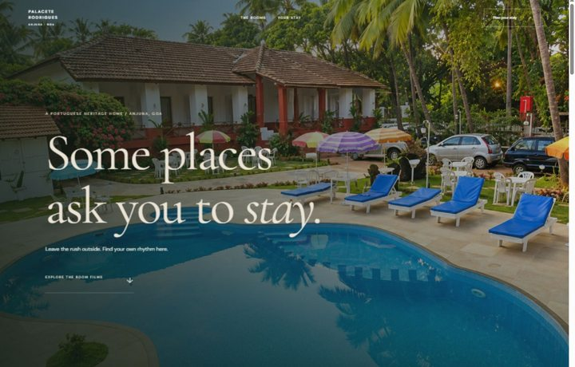
OPEN FULL EXPERIENCE ↗Explore this direction ↗A PRIVATE PRESENTATION FOR NECILA FERNANDESGOA, INDIA / DESIGN STUDY 2026
One place.
Twenty perspectives.
Twenty complete experiences. Twenty different ways to explore.
Twenty distinct ways to express the soul of Palacete Rodrigues.
PR
01 — 20
01 — 20
THE COLLECTION / TWENTY COMPLETE CONCEPTS
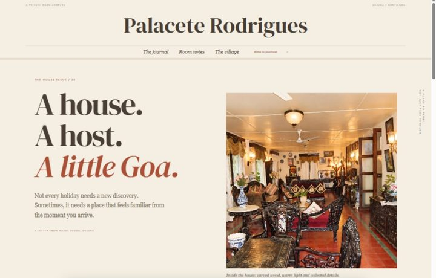
OPEN FULL EXPERIENCE ↗Explore this direction ↗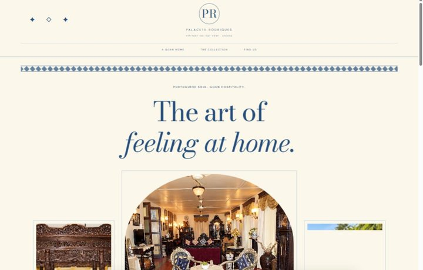
OPEN FULL EXPERIENCE ↗Explore this direction ↗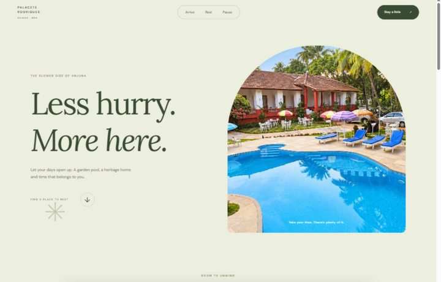
OPEN FULL EXPERIENCE ↗Explore this direction ↗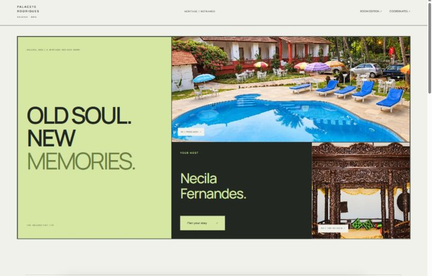
OPEN FULL EXPERIENCE ↗Explore this direction ↗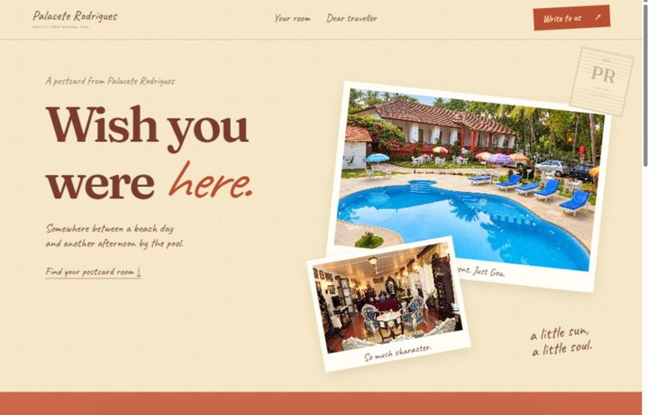
OPEN FULL EXPERIENCE ↗Explore this direction ↗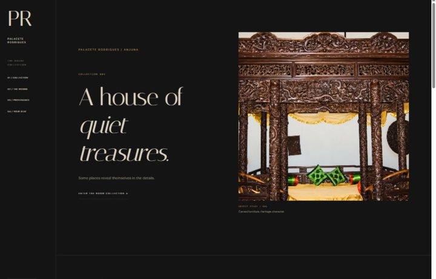
OPEN FULL EXPERIENCE ↗Explore this direction ↗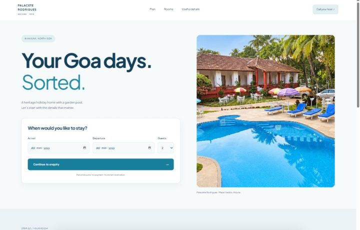
OPEN FULL EXPERIENCE ↗Explore this direction ↗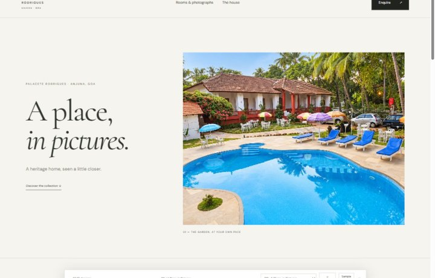
OPEN FULL EXPERIENCE ↗Explore this direction ↗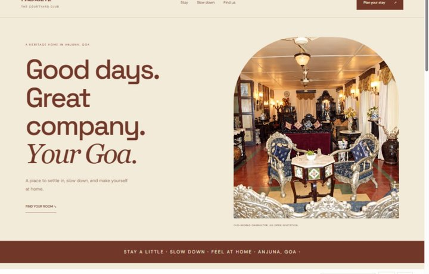
OPEN FULL EXPERIENCE ↗Explore this direction ↗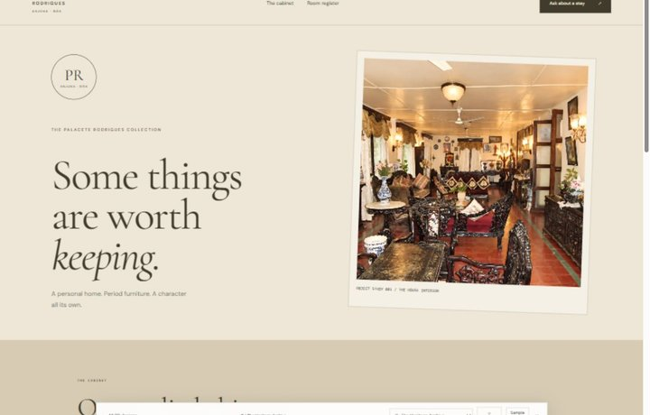
OPEN FULL EXPERIENCE ↗Explore this direction ↗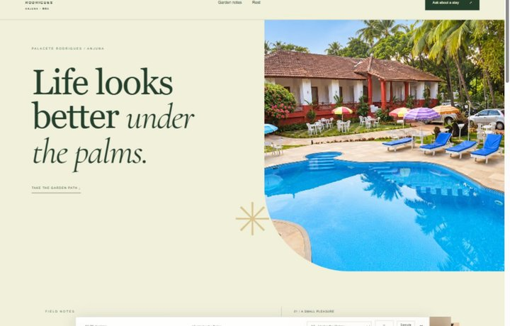
OPEN FULL EXPERIENCE ↗Explore this direction ↗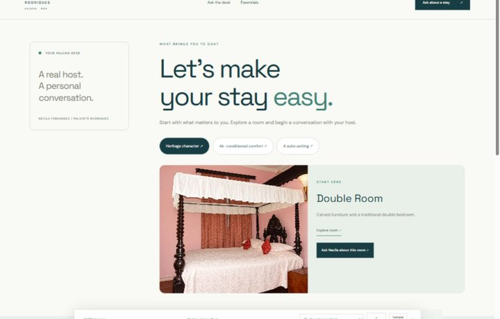
OPEN FULL EXPERIENCE ↗Explore this direction ↗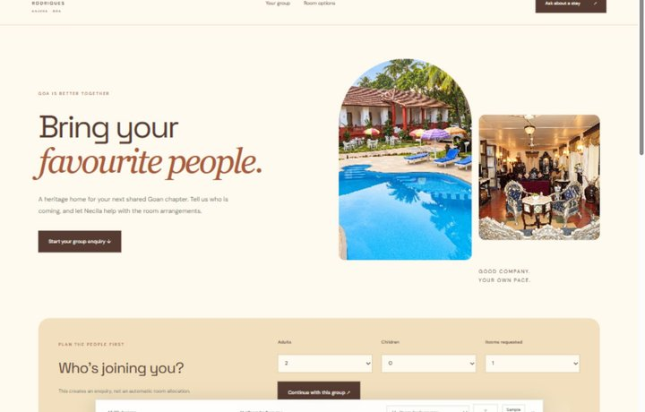
OPEN FULL EXPERIENCE ↗Explore this direction ↗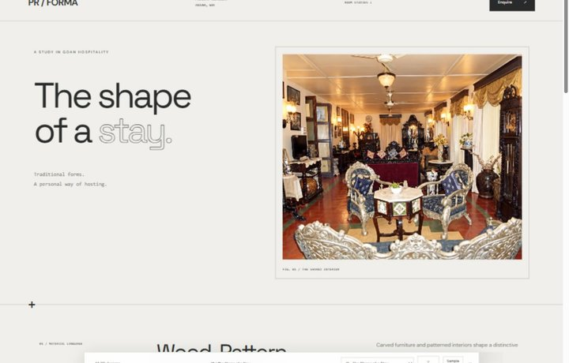
OPEN FULL EXPERIENCE ↗Explore this direction ↗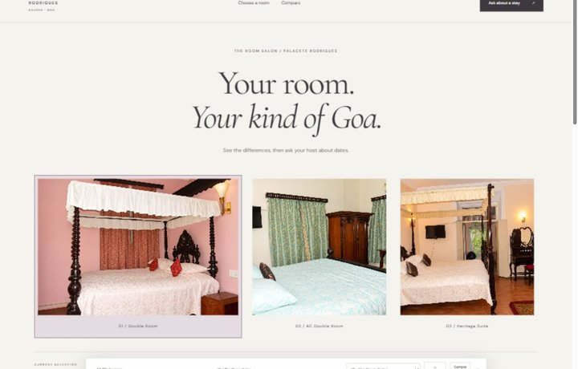
OPEN FULL EXPERIENCE ↗Explore this direction ↗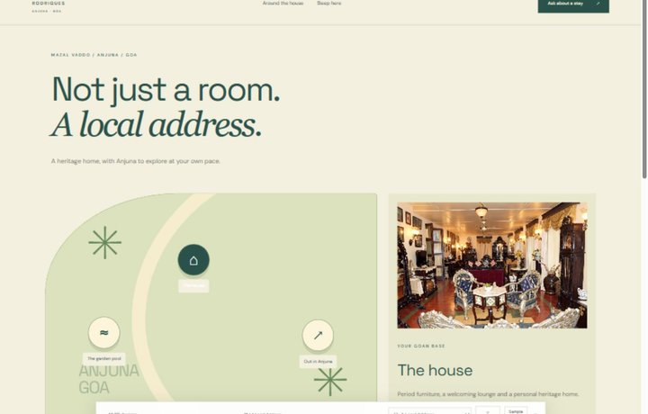
OPEN FULL EXPERIENCE ↗Explore this direction ↗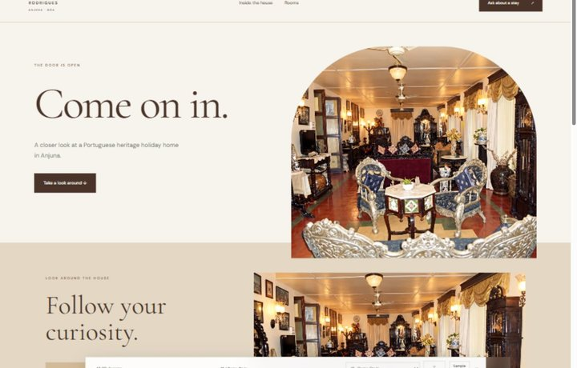
OPEN FULL EXPERIENCE ↗Explore this direction ↗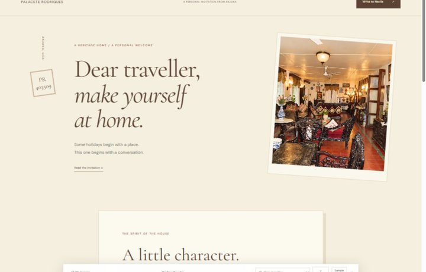
OPEN FULL EXPERIENCE ↗Explore this direction ↗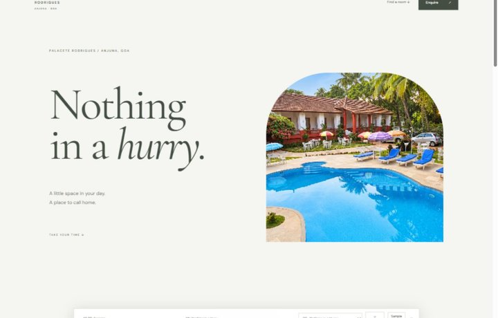
OPEN FULL EXPERIENCE ↗Explore this direction ↗No shortlisted designs yet. Use the heart on any concept to save it here.
DESIGN IS A CHOICE, NOT A COLOUR SWAP.
Different ways to explore.
Considered in every detail.
| Direction | Page architecture | Room navigation | Open |
|---|---|---|---|
| 01 · The Still House | Full-width film reel | Scroll through large room stills | View ↗ |
| 02 · Casa Journal | Masthead, reading columns & pull-quote | Annotated room-note index | View ↗ |
| 03 · Azul & Ivory | Triptych portal & tiled masonry | Explore staggered room plates | View ↗ |
| 04 · Jardim Retreat | Layered vertical garden scroll | Sticky room cards & soft parallax | View ↗ |
| 05 · The Anjuna Edit | Bento hero & publication columns | Read independent editorial room columns | View ↗ |
| 06 · Postcards from Goa | Scrapbook & handwritten letter | Turn an inert, keyboard-ready card deck | View ↗ |
| 07 · The Curator’s House | Fixed catalogue sidebar | Open numbered museum exhibits | View ↗ |
| 08 · Anjuna, Made Easy | Date-first utility planner | Segmented room tabs & comparison table | View ↗ |
| 09 · A Place, in Pictures | Flowing photographic portfolio | Offset room photographs & individual details | View ↗ |
| 10 · The Courtyard Club | Vertical hospitality website | Expandable room compositions | View ↗ |
| 11 · The Heritage Archive | A cabinet of Goan character | A heritage cabinet with opening collection drawers and a ledger-style room register. | View ↗ |
| 12 · Under the Palms | A tropical garden atlas | A botanical cover, sticky garden field notes and arched room portraits. | View ↗ |
| 13 · Your Anjuna Desk | A personal concierge guide | A concierge desk that responds to your stay preferences with a room suggestion. | View ↗ |
| 14 · Room for Everyone | A group-stay planning canvas | A social photo collage and group planner that carries guests and room requests into the enquiry. | View ↗ |
| 15 · The Shape of a Stay | An architectural specification | An architectural study with numbered room specifications and material-led compositions. | View ↗ |
| 16 · The Room Salon | A side-by-side room comparison | An expanding room selection strip, live selection summary and side-by-side comparison. | View ↗ |
| 17 · A Local Address | An illustrated place-first map | An illustrated interactive property guide and a compact room address book. | View ↗ |
| 18 · Come On In | An interactive house tour | A welcoming house entrance, selectable interior tour and a peek-inside room gallery. | View ↗ |
| 19 · Dear Traveller | A host’s personal invitation | A personal invitation, spacious reading letter and room enquiries beside a sticky house portrait. | View ↗ |
| 20 · Nothing in a Hurry | A quiet, spacious retreat | A quiet typographic opening, generous pauses and alternating intimate room studies. | View ↗ |
THE THINKING BEHIND THE COLLECTION
Hospitality first.
Decoration second.
01
A sense of place
Drawn from the story-led approach of The Largo and the property-led storytelling of Ahilya by the Sea. Every concept uses Palacete’s own rooms and heritage character.
02
An obvious next step
Room discovery and direct enquiries remain easy to find, informed by the clearly separated rooms and booking journeys of The Astor Goa. No invented prices, ratings or amenities.
03
Motion with manners
Gentle entrances, photographic movement and useful hover feedback. No scroll hijacking, forced sound or loading screens. Reduced-motion settings are respected.
Local design samples for review. Photos are AI-enhanced archival property images; fine details may differ. Enquiries prepare WhatsApp/email messages and require the guest to send them. Automatic email delivery and live booking inventory are not connected.